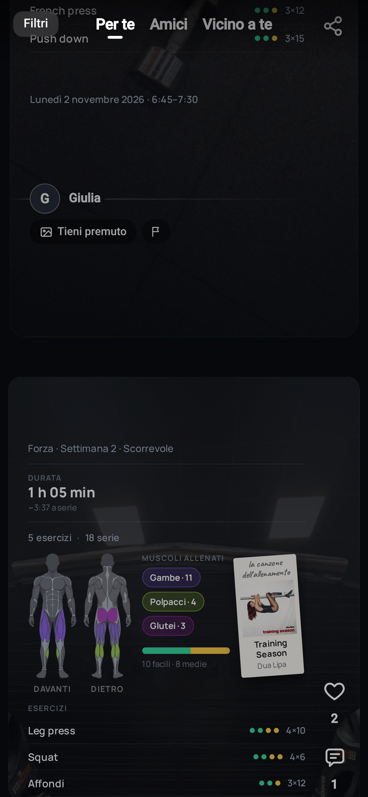

ProgettoPalestra
Social
Un social per i
tuoi allenamenti.
Ogni allenamento che chiudi diventa un post: muscoli, esercizi, serie, la tua foto e la tua canzone. E scorri quelli degli altri, uno dopo l'altro.
Scorri →

ProgettoPalestra
Social
Ogni allenamento che chiudi diventa un post: muscoli, esercizi, serie, la tua foto e la tua canzone. E scorri quelli degli altri, uno dopo l'altro.
Scorri →

04 / 04
ProgettoPalestra
Dal link in bio
progettopalestra.it
L'app non sostituisce un medico, un nutrizionista o un allenatore.